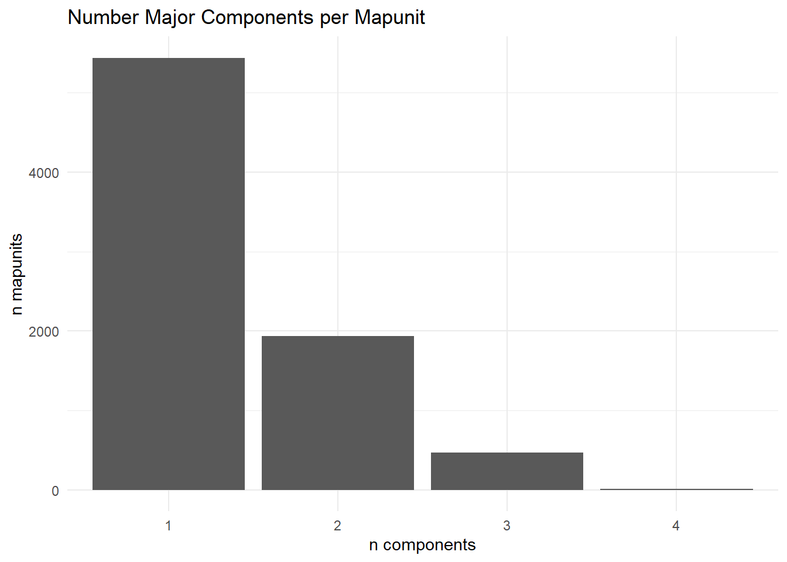

First, load the list of MUKEYs generated in mus_comp_in_aoi.qmd
We will use our MUKEYs to get the relevant components. I’ve created a list column with all the components for each MUKEY in it. There are 7862 unique mapunits in my area of interest (AOI).
mn_gdb <-"data/gSSURGO_MN/gSSURGO_MN.gdb"# read only component table, as dataframemn_comp <- sf::st_read(dsn = mn_gdb, layer ="component")
Reading layer `component' from data source
`C:\Users\Hava\Documents\R\ch03-sh-cluster\data\gSSURGO_MN\gSSURGO_MN.gdb'
using driver `OpenFileGDB'
Warning: no simple feature geometries present: returning a data.frame or tbl_df
After some troubleshooting in later steps, I came back and decided it makes the most sense to save a key of the dominant component percent in each map unit here, before anything gets dropped in the conversion to an aqp object, see Section 4.5.4 for more on this.
This is relevant because we will use the dominant component percentage (which component has highest comppct_r as one of our “data sufficiency” checks to determine if a given MUKEY is included in the clustering analysis. In doing some exploratory work in Section 6.9, I noticed that we had some
dom_cmp_key <- target_comp %>% dplyr::select(cokey, mukey, comppct_r) %>% dplyr::group_by(mukey) %>% dplyr::summarise(dom_comppct =max(comppct_r))write_csv(dom_cmp_key, "./data/key_dominant_component_percent.csv") # remove b/c this is big, we are done with itrm(mn_comp)
3.2 Components per mapunit
Out of curiosity, what does the distribution look like for number of components in a mapunit?
Now how many major components are we working with per map unit?

I’m saving this simple list of map units and number of components, max component percent for a later step where we determine if there is enough data to include that map unit in our final analysis.
Need to pull fragvol_r from the chfrags table, this is the volume percentage of horizon occupied by 2mm or larger fraction (20mm or larger for wood fragments) on a whole soil basis
Turns out I need to aggregate this by chkey, there can be multiple fragvol_r entries for a given component-horizon.
# some coarse frag data in the chfrag tablechfrag <- sf::st_read(dsn = mn_gdb, layer ="chfrags")
Reading layer `chfrags' from data source
`C:\Users\Hava\Documents\R\ch03-sh-cluster\data\gSSURGO_MN\gSSURGO_MN.gdb'
using driver `OpenFileGDB'
Warning: no simple feature geometries present: returning a data.frame or tbl_df
# keep only the component horizons I'm interested intarget_chfrag <- chfrag %>% dplyr::filter(chkey %in% target_choriz$chkey)# sum volume of coarse frags in a given horizonfrag_hz_summary <- target_chfrag %>% dplyr::group_by(chkey) %>% dplyr::summarise(fragvol_r_sum =sum(fragvol_r, na.rm =TRUE),.groups ="drop") %>% dplyr::select(chkey, fragvol_r_sum) # add coarse frag col to my dftarget_choriz_frag <-left_join(target_choriz, frag_hz_summary, by ="chkey")